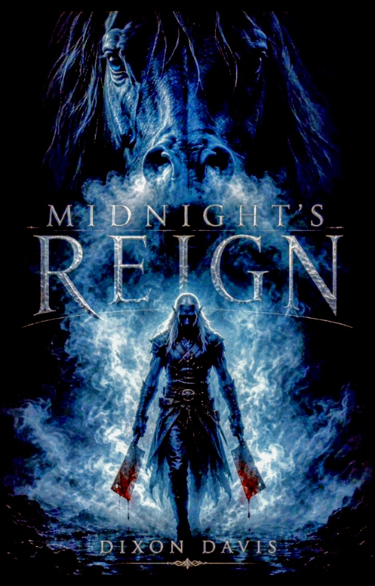

About Dixon Davis
Dixon Davis is an American author, veteran, and father whose writing is shaped by an extraordinary life of love, loss, separation, resilience, and hope.
For more than two decades, Davis has lived behind prison walls for a conviction he has steadfastly maintained is wrongful. During those years, he has experienced the loss of people he loved, watched his children grow from a distance, and continued fighting to preserve both his identity and his hope for the future.
Before incarceration, Davis served in the United States Marine Corps. He is a father, a storyteller, and someone whose understanding of time, memory, grief, and human connection comes not simply from imagination, but from lived experience.
Writing under the name Dixon Davis, he published his debut novel, 8:01 — Collisions of Time, a work of fiction shaped by many of those experiences. His forthcoming dark-fantasy novel, Midnight's Reign, explores an entirely different world while continuing his interest in choice, consequence, darkness, and hope.
Through his writing, Davis does not ask readers to see an inmate. He asks them to see a person—and then decide for themselves what his stories have to say.
